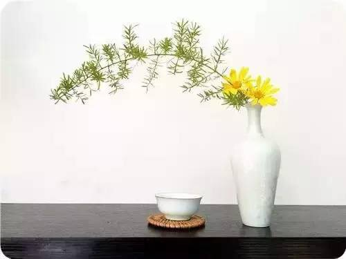
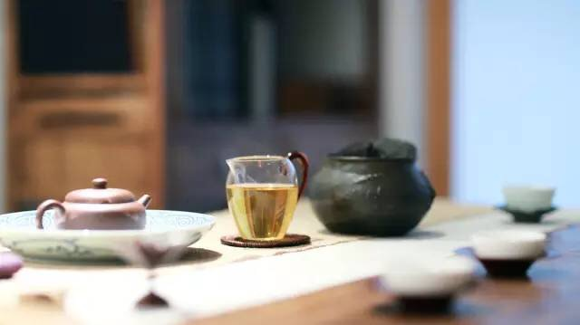
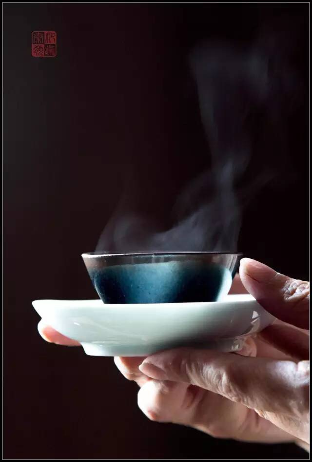

交易中心
交易中心
 交易指南
交易指南
 普洱档案
普洱档案
 普洱资讯
普洱资讯
 下载中心
下载中心
 活动频道
活动频道

好茶，会让你的身体来说话
2016-01-14 09:47 来源：蒙顶山普洱
中国人几乎每天都是要喝茶的，因为茶既保健又养生养心。最难得的是一杯好茶，因为一杯好茶的背后，不仅透露了从种植茶树、采收、制作、冲泡……每一个环节茶人最细腻的态度，还能见到山水、见到人生。尤其小雪过后，冷空气来袭，气温逐渐下降，待遇得天气放晴，更想手捧一杯茶，在阳光下偷得半日浮生。

爱茶之人常说，人生得一知己难，得一好茶也难。茶友们总问，好茶的标准是什么？究竟什么样的茶才算好茶？其实，茶的世界是多元的，每个人喜欢的可能都不一样，一杯茶，怎样才叫好，每个人的定义都不一样。然而茶好不好，是会通过身体告诉你的。

生津
1、两颊生津
在品茶时，感觉一下两颊是否分泌出津液。茶叶内含成分中，有茶单宁和某些其他成分，能刺激口腔内壁紧束收敛，形成涩感以及生津。
但是并非凡是涩感都会生津，部分较劣等茶品，虽然茶汤很涩，但并不会生津，始终觉得口腔内部卷缩起来，两颊肌肉有痉挛般难受。这种涩而不能生津，称之为“涩而不开”。
2、舌面生津
舌面生津除了生津解渴、舒畅的生理感受之外，那种品茗艺境，要比两颊生津高上一筹。由两颊生津的野性霸气、急促粗糙，转入到舌面生津那种温驯娇柔、缓和细致。
3、舌底鸣泉
品饮到极品岩茶，其茶汤经过口腔接触到舌头底部，舌头底面会缓缓生津，不断有涌出细小泡泡的感觉。这种舌下生津现象，称为舌底鸣泉。
回甘
茶的回甘，亦即“甜味”。茶味苦了，人们总是不喜欢，而甜味太浓又不利健康，一丝淡淡的甜味给我们带来愉悦的体验。
譬如乾红早春茶，甄选早春时候每一颗嫩芽，经过“宗式八法”严苛的制茶工序，三十年老茶师精心制作，茶中的苦和涩得以慢慢减弱，而糖份仍然留在茶叶中，经冲泡后，有机酸、黄酮、糖类慢慢释放于茶汤里而透出一丝似有似无的甜味，这种甜味不会以刺激味觉的形式出现，只会慢慢的从舌根反馈回来，故而品茶者常称之为“回甘”。
相对入口立刻表现出来的甜味而言，这种“苦尽甘来”的后味更富戏剧性，也更多的与好茶品质联系在一起。所以好的茶经常会带有“回甘”，回甘的强度与持久性也经常作为评判好茶的指标。
茶气
茶气科学地说是体感，当我们饮茶时，茶并不单纯只有“寒、凉、温、热”等自然反应，而是一种文化现象，裹带着人气，饱满丰润、凌厉跌宕，甚至上升为哲学、艺术、宗教等文化感情。茶越好，带给人的体感（茶气）越强烈。

1、茶气文化
"茶气"是让人实现心灵瞬间的"逍遥游"的载体，饮茶者借助茶气，将情感的宣泄依附在茶体、茶香和茶韵上，乘物远行、心游万仞，与天地精神独往来。正因为这种现象和儒、道、佛家的心游、禅定感受颇有异曲同工之妙，也就使得茶气在品茶时变得奇妙与高雅。
2、茶气境界
品味"茶气"也是踏寻一种生活境界，寄寓一种生活理想，一旦有了感悟，那么即使无茶，心中的"茶气"也能够持久回荡，就象古诗所吟唱的"春有百花秋有月，夏有凉风冬有雪，若无闲事挂心头，便是人间好时节。"
好茶，会让你的身体来说话。

- 喝茶不过三个阶段：解渴、知味、怡情2016-03-07
- 【普洱课堂】茶叶渣的十大神奇妙用告诉你！2016-03-07
- 个性化，普洱茶行业未来的主流!2016-03-07
- 蒙顶山普洱：吸引用户投资的秘密武器大公开2016-03-03
- 茶苦涩青霉味，都是啥造成的?2016-03-03